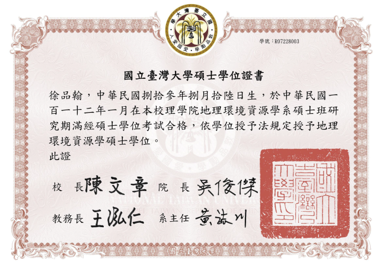

|
|
姓名 |
徐品翰 |
性別 |
男 |
|
信箱 |
r07228003@ntu.edu.tw |
電話 |
0916638003 |
|
|
地址 |
新竹市東區千甲里原興路26號 |
兵役 |
役畢 |
學歷
|
校名 |
科系 |
年分 |
狀態 |
|
國立新竹高中 |
|
2009-2012 |
畢業 |
|
國立臺灣師範大學 |
資訊工程學系 |
2012-2017 |
第7名畢業(21.88%) |
|
中國哈爾濱工業大學 |
校際交換生 (電子商務與物聯網) |
2016 |
校內獎學金 |
|
國立臺灣大學 |
地理環境資源學系研究所(空間資訊組) |
2018-2023 |
畢業 |
|
俄羅斯聯邦莫斯科國立大學 |
亞非學院 (教育部語言交換公費) |
2022 |
教育部全額獎學金一年 |
著作
Hsu, Pin-Han (2023) Creating a consensus
self-organizing map for predicting dengue diffusion in time and space, National
Taiwan University Master's Thesis doi:10.6342/NTU202300534.
C# .NET架構動態地圖呈現登革熱預測成果，本研究發明的Consensus self-organizing map C++平行運算在登革熱爆發期間，預測90%以上的登革熱病例發病日與發病位置(公尺解析度)。 文本 海報 影片 程式碼
Hsu, Pin-Han & Chang, Kuo-Chen (2017) Discovering Association rules between Taipei Social Economic and Population Database, Conference of Taiwan Geographical Information Society, vol. 2017.
台北工商資料庫最細緻的最小統計區資料，透過關聯規則分析，在台灣地理資訊研討會發表。 文本
Kuo-Chen Chang, Cai-Yu Ou, Yi-Fen Wang, Yi-Ting Hung & Pin-Han Hsu (2015) Impact of the Adjustable Area Unit Problem (MAUP) on the Estimation of Population Distribution, Monthly publication of Budget, Accounting and statistics executive Yuan, R.O.C. (Taiwan), vol 720, pp. 70-76.
第一項參與的產官學計畫，分析台北的工商業資料庫的各種迴歸成果，可惜數十種模式嘗試R-square表現不佳，發表檢討報告，只有空間解析度迴歸部分是本計畫成功的項目。 文本
專題
分散式機器學習專題
Bidirectional recursive self-Organizing maps: 設計雙向遞迴的自組織對映類神經網路，常用資料集與離婚資料預測率優於經典自組織對映類神經網路。 文本 投影片
腦理論與類神經專題
Hairy network+ Tiling algorithm + Q-Learning期末報告: C++開發各種經典人腦架構透過類神經網路實現的報告書。 投影片
適地性服務(Location-based service)專題
救災整合系統: 災民主動通報位置與救災人員動態規劃救援順序系統。 網站 影片
人口社會地理
Relation of Urbanization to Divorce in Taiwan: 透過倒傳遞類神經網路(BPNN)預測台灣全省的離婚現象。 文本 投影片
城鄉實證研究專題
台北人口與社會經濟資料關聯規則推論統計分析: 關聯規則透過嚴謹的實證研究方法(高等統計學)，推翻或接受假說，以台北工商業資料為例。 文本 投影片
軟體工程專題
酸宗痛: 敏捷開發概念，利用JAVA開發一款線上遊戲，以多位候選人進行選總統。 影片
物件導向專題
物件導向C++學習影片: 如何用物件導向概念快速學習C++。 影片
XML課程
汽車駕訓選擇題: 功能如同監理站的考照系統，利用XML實現動態網頁。 網站 影片
計算機圖學
來自星星的你: 利用WebGL開發太空射擊隕石遊戲，隕石有爆炸效果。 網站 影片
資料庫理論專題
民政資料庫: 利用MYSQL+PHP+HTML開發計算都市工商業核心偏移的動態系統。 網站 影片
莫斯科國立大學實習
對華招生事物: 俄中網頁翻譯，亞非學院招生影片。 影片
備註: 部分動態網頁需要伺服器開啟才能使用。
研究室與論文
|
指導教授 |
溫在弘 |
研究室 |
|
|
論文主題 |
Creating a consensus self-organizing map for predicting dengue diffusion in time and space |
||
|
關鍵字 |
登革熱、自組織對映、DBSCAN、時空模式、滾動預測、共識決 |
||
|
摘要 |
登革熱每日滾動預測擴散模式，採用時空預測的框架掌握登革熱疫情傳染的動向。 開發四種預測模式，模式一透過改進式DBSCAN、模式二承上與馬可夫鏈蒙地卡羅(Markov chain Monte Carlo；MCMC)、模式三承上外加自組織對映(Self-organizing map)進行共識決(Consensus)，模式四結合氣候環境資料，283降維至43個維度平行運算(Parallel computing)，設計系統效能評估綜合指標(Indicator)比較時空模式表現。 技術層面包含C++ 17 STL與Booster C++ Library 1.79.0，採用非同步Thread Pool平行處理技術，C# .NET結合Google API滾動預測動態影像圖台，Python繪製研究成果圖表。 |
||
Hsu, Pin-Han (2023) Creating a consensus
self-organizing map for predicting dengue diffusion in time and space, National
Taiwan University Master's Thesis doi:10.6342/NTU202300534.
C# .NET架構動態地圖呈現登革熱預測成果，本研究發明的Consensus self-organizing map C++平行運算在登革熱爆發期間，預測90%以上的登革熱病例發病日與發病位置(公尺解析度)。 文本 海報 影片 程式碼
實習與工作經驗
|
公司單位名稱 |
職稱 |
年分 |
工作內容 |
崧旭資訊股份有限公司 |
產品部實習生 |
2014 |
開發自動化測試軟體: Python物件導向開發，Sikuli測試Supergeo地理資訊系統。 |
|
國立台灣大學地理系 |
Python 課程助教 |
2018 |
Python課程教學，開發機器人(C# .NET環境)批改學員作業。 |
|
莫斯科國立大學亞非學院國際事務組 |
對華招生事務 |
2022 |
俄翻中學院網頁、就學文件與拍攝中文招生影片。 |
證書
對外俄語等級考試B1
專長領域
|
軟體工程 |
|
ANSI C、C++ STL 11~17與物件導向程式開發: 長達10年經驗，熟悉物件導向、模組化、除錯功能與去除程式碼相依性，了解標準庫與Github等開發工具，非同步與同步平行處理功能。 軟體工程: 擔任敏捷開發(Agile software development)軟體工程課程專案經理(Project manger)，JAVA環境開發輕型線上遊戲。 |
|
資訊理論 |
|
分散式機器學習、類神經網路與腦理論(Brain theory): 根據資料類型，修改各種監督是與非監督式演算法原始碼或平行化運算，設計變異類神經網路並且進行系統效能評估，例如MLP、Hebbian learning、RNN、 BPNN、Boltzmann machine與 SOM等開發經驗(C++環境為主)。 高等統計學: 善用並開發馬可夫鏈蒙地卡羅(Markov chain Monte Carlo, MCMC)發展模式，了解各類迴歸變形細節與性質。 |
|
資訊系統 |
|
地理資訊系統: C# .NET或Java Script結合Google API系統開發。 適地性服務: 架設MYSQL後台與PHP前台。 |
|
對外國事物 |
|
對俄羅斯事務: 教育部語言交換訪問生進入莫斯科國立大學亞非學院對外俄文四年級，並暑期於該部實習對華招生事物，對外俄語等級考試B1。 |
熟悉的工具與語言
底層: ANSI C, C++ 17 STL with parallel programming
中介: Arduino, C# .NET, Python, Java, Linux
網頁: PHP, MYSQL, HTML 5.0, XML
工具: ArcGIS, Russian language
相關領域課程
進階程式設計、高等作業系統、演算法與資料結構、區域網路與計算機網路、計算機結構、類神經網路與分散式機器學習、腦理論、組合語言、離散數學、物聯網與電子商務、計算機圖學、語音處理、物件導向分析、軟體工程、資料庫理論、資料探勘、微處理機、離散數學與高等統計學、進階地理資訊系統、適地性服務、地質水文與地圖學、莫大對外俄文大四修畢。
成績單與證明文件


俄羅斯聯邦莫斯科國立大學亞非學院成績單
俄羅斯聯邦外俄語等級考試B1
國立台灣大學地理系Python課程助教

自傳
2009年在新竹高中接觸軟研社，開發網頁與C++。
2012年推甄進入師大地理系，進入張國禎教授遙測福爾摩沙二號衛星(FORMOSAT-2)研究室，熟悉地理資訊系統與衛星影像加值服務，在此接案販賣衛星影像，對地理資訊系統開發非常有興趣，且微積分、數位邏輯(Verilog語法)、程式設計成績優秀，師大地理張國禎教授建議學生轉往資訊工程學系就讀，前往崧旭資訊股份有限公司產品部，開發自動化測試軟體Python物件導向開發Sikuli測試SuperGeo地理資訊系統，由於商業機敏性不能碰觸軟體核心，不斷向開發部門工程師請教C++的STL與DLL開發技巧，深刻了解空間產業的空缺，因此想發展新一代的地理資訊系統。。
2014轉系資訊工程學系，由於C++的功力在實習大增，直接修進階程式設計，寫作業非常迅速，並且電視白板教學寫模板(Template)、繼承(Inheritance)的多載(Overload)的技巧，進階程式設計78分，程式設計(二)99分，往後課程寫程式作業都是課堂內完成，課內要求非常輕鬆達到。
2016年對物聯網與電子商務濃厚興趣，校際交換前往中國哈爾濱工業大學軟件學院就讀，真實了解中國電子商務的興盛原理，並寫物聯網課程論文: 水源濁度預報之供水決策感知系統，另一方面由於該校位於邊境城市因此接觸俄文。
2017年回國修習微處理機與實驗，快速進入Arduino的開發環境，期望在研究所研究物聯網相關領域。
大學期間資訊理論課程幫助很大，軟體工程認識敏捷開發(Agile software development)與物件導向分析，用專案經理的高度領導同學開發程式。
張國禎教授帶領參加台灣地理資訊研討會發表論文與主計月刊，透過資料探勘於2017年發表Discovering Association rules between Taipei Social Economic and Population Database與2015年統計空間迴歸發表Impact of the Adjustable
Area Unit Problem (MAUP) on the Estimation of Population Distribution。
2018年進入臺大地理計算科學研究室，擔任Python課程助教，繼續修習高等作業系統想認識嵌入式系統(Embeded system)，做簡單的Linux核心編程，與認識作業系統輔助非同步平行化技巧。
2019年發現台大資工網媒的主流是機器學習，設定接近90%預測率的目標，因此學習類神經網路進階課程腦理論與分散式機器學習。
2021年結合畢生所學完成論文，精準預測登革熱發病日與發病位置(預測率90%以上)，透過發展共識自組織對映(Consensus self-organizing map)非同步高維度平行化類神經網路運算，與開發新一代時空地理資訊系統結合Google API，主張從底層到圖台平行處理開發。
2022年榮獲教育部俄羅斯語言交換獎學金一年，前往莫斯科國立大學亞非學院就讀對外俄語四年級，國家考試獲俄檢B1，暑期於該院國際事務處打工填補臨時對華招生事務空缺。
畢業證書
